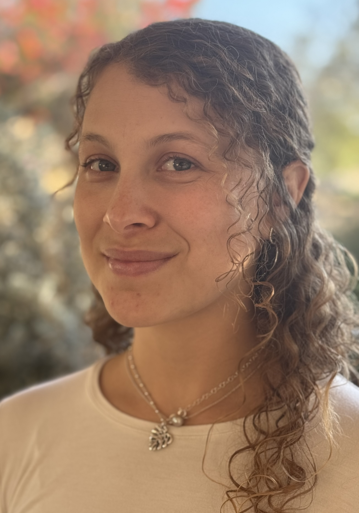

MSc Student · Computer Science · Technion
I am advised by Or Litany (Technion) and Rajalakshmi Nandakumar (Cornell Tech). My research is in 3D computer vision, neural scene representation, and radar perception for autonomous systems.

DyRAD: Radar Novel View Synthesis for Dynamic Driving Scenes
arXiv, 2026
Radar novel-view synthesis for dynamic driving scenes that renders complete range–azimuth–Doppler tensors through a fixed sensor point-spread function.
project page / code / arXiv
VideoMDM: Towards 3D Human Motion Generation From 2D Supervision
NeurIPS, 2026
A diffusion-based framework that trains 3D human motion priors directly from accurate 2D poses extracted from monocular videos, without any 3D ground truth.
project page / code / arXiv